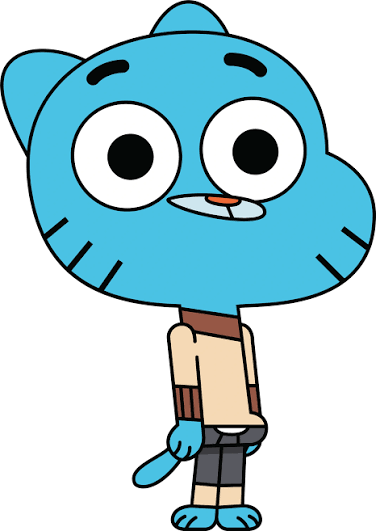
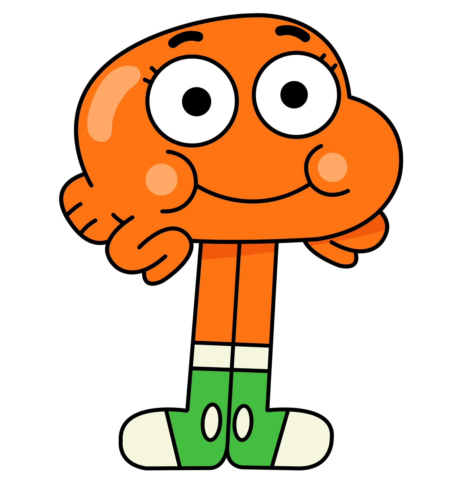

Gumball Watterson es el protagonista de la serie animada El asombroso mundo de Gumball. Es un gato azul de 12 años que vive en la ciudad ficticia de Elmore con su familia y amigos. Gumball es conocido por su personalidad traviesa, su sentido del humor y su capacidad para meterse en problemas.

Darwin Watterson es el mejor amigo y hermano adoptivo de Gumball. Es un pez naranja con piernas que originalmente era la mascota de la familia Watterson. Darwin es conocido por su personalidad amable, su lealtad a sus amigos y su entusiasmo por aprender cosas nuevas.